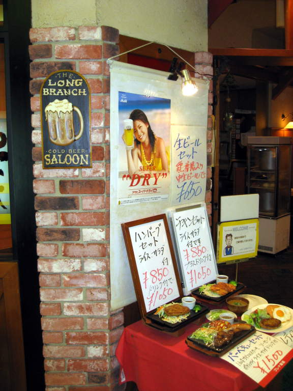

Chiba
Chiba
is a town a short train ride away from Tokyo. Some background
about why we went there. I'm a New York Mets baseball fan.
The team used to be managed by a man named Bobby Valentine.
He earned my respect and affection as a fan, and was also
entertaining. At the time, the Mets were doing awful and the
manager was quite boring. They were in the market for a new
manager. Bobby Valentine is, at the time I write this, managing
the Chiba Lotte Marines in Japan and very highly respected out there.
In fact, they treat him like a god, and present him with flowers
before every game. He even has a statue of his likeness in front
of the stadium. I was hoping maybe I'd get to see him and
convince him to come back to New York. When we arrived at Chiba
though, our first mission was food, and we found the Long Branch Saloon.
We had a waitress with a bright smile and a fashionable hat. The food was okay.
Here's some of the food. Taco salad I think. Not nearly as Japanese as the restaurant's name suggested.
Here's the Marines' stadium.
The mascots of the Chiba Lotte Marines, me, and Miller.
Here's
that statue of Bobby Valentine I mentioned. Everything is
actually fairly close to life-sized, except the thumb. I bought a
Marines jersey by the way.
I
bought tickets for this game well in advance in the states, through
japanball.com, and had the tickets delivered to our ryokan (hotel) in
Tokyo.
Warm-ups on the field before the game. I was just trying to find Bobby Valentine.
Some wore a cozy-looking Marines yukata
at the game. The flower in the hair is certainly something you
wouldn't see often at a baseball game in the states. That's too
bad.
Found
him! The dude on the fence is Bobby Valentine, who wears the
number 2. I took this picture at full zoom (16x), so I couldn't
tell this picture was of him until later, when I could see the full
resolution photo. I could sort of tell it was him by the
mannerisms and how people acted around him.
The
mascot, Bobby Valentine, and a kid. What's that guy in blue?
I think that was the Orix Buffaloes manager, also presented with
flowers. I'm glad for that, because it'd be a little weird if
Valentine was the only one who received flowers.
This is Bobby Valentine, displayed on the scoreboard, walking back to the dugout with the flowers presented to him.
The two bright-eyed mascots, and some girl with a baseball. I totally forget why she was out there.
Here's a shot of a lot of the Marines baseball players in the dugout.
Cheerleaders accompanied the mascot, marching around, rallying up the fans.
More practicing on the field before the game.
Players started to get to their positions on the field as the grounds crew put the final touches on the field.
The home plate area is being fixed up and repainted as the mascot and her hooligans wreak more havoc on the field.
Here
are shots of various players during the game. The first one,
labeled "Benny", is Benny Agbayani. He's a somewhat stocky
Hawaiian guy who used to play on the Mets when Bobby Valentine managed.
He was good but never really that impressive. I can see him
being a success in Japan, which is admittedly a bit less competitive
than the Major League teams in the US.
Batter, catcher, umpire, all waiting for the next pitch.
When
a pitcher got pulled from the game, this silver Volvo drove out to the
pitcher's mound with the new pitcher, and the current one jumped in to
be driven away. Big time-saver I guess. It's different, so
I like it.
More action shots from the game, along with that car again. You can see Benny Agbayani reaching first base in this shot.
The
stadium was saturated with Japanese girls selling beer. If you
want to buy beer from pretty women, perhaps you should get into
Japanese baseball. One older fan near us had a favorite beer girl
and got all giddy every time she approached. A bit creepy, but
who am I to judge anyone? So the Marines were leading something
like 9-1 and finished the game 9-8. As a Mets fan, this felt
normal to me. Trust me. The amazing thing was there was a
grand slam by each side. The fans were absolutely amazing, having
a different theme song for every Marine that went up to bat. I
had a wonderful time, and I think that's the most important thing, even
if Japanese beer isn't that good.
Back